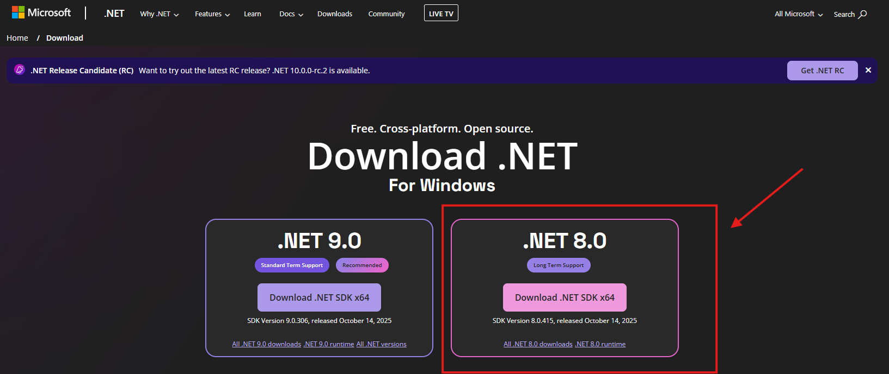
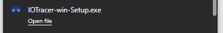
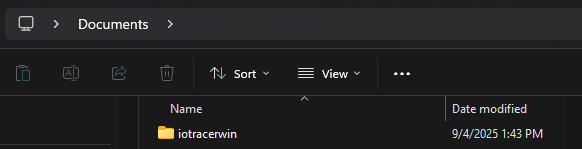
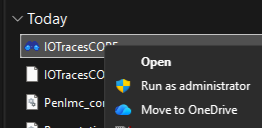
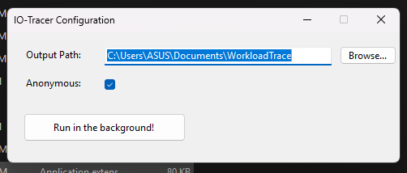
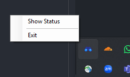
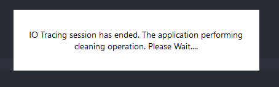
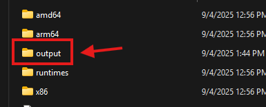

Quick Start Guide | Windows
🎥 Here’s a quick video guide on installation and usage:
Quick Start | IO Tracer for Windows
Installation
Dependencies
Install dotnet framework from Microsoft's official download page. Refer here for installation guide (P.S. Just follow it until the installation completed).

Verify your installation by running dotnet --info in the terminal

Tracer
Download the .zip file from the GitHub Release page and extract it.

Move the extracted folder to your preferred location.
We recommend placing it under the Documents folder for easy access.

Installation complete!
Basic Usage
Run the program as administrator
Right–click the file with the binocular icon and choose Run as administrator.

Program starts running
Once started, you’ll be prompted to several options. If you're comfortable with your choice, hit the run button.

The program is currently active running in the background. You can check is status in the tray icon.

Exiting the program
Click the exit button from the tray icon
A dialog will pop up telling you to wait while the program doing some cleaning up

Once the dialog closed, the program has gracefully closed.
Check the output
If you close the program properly, results will be saved inside the output path you have set!

⚠️ Important:
It's better for us to close the program if you want to shut your device. We'd like to prevent corruption happening during the data collection process 😉.